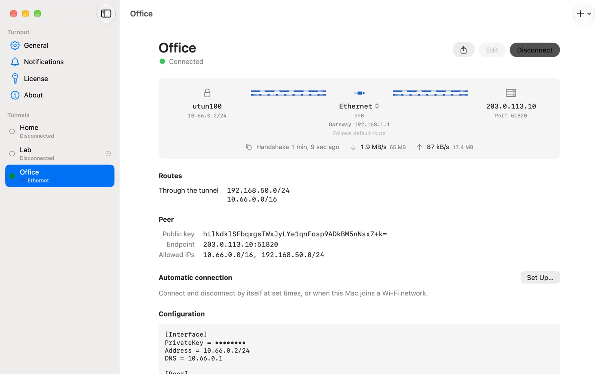
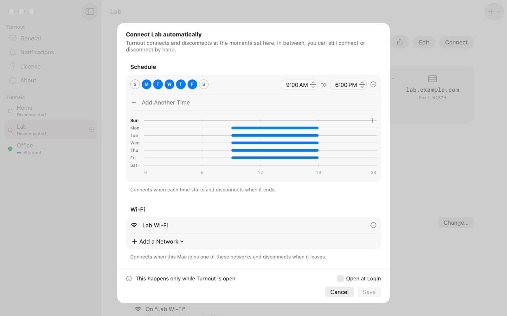
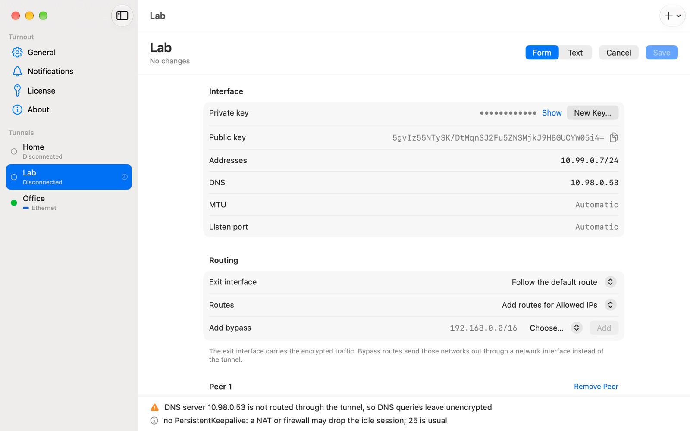
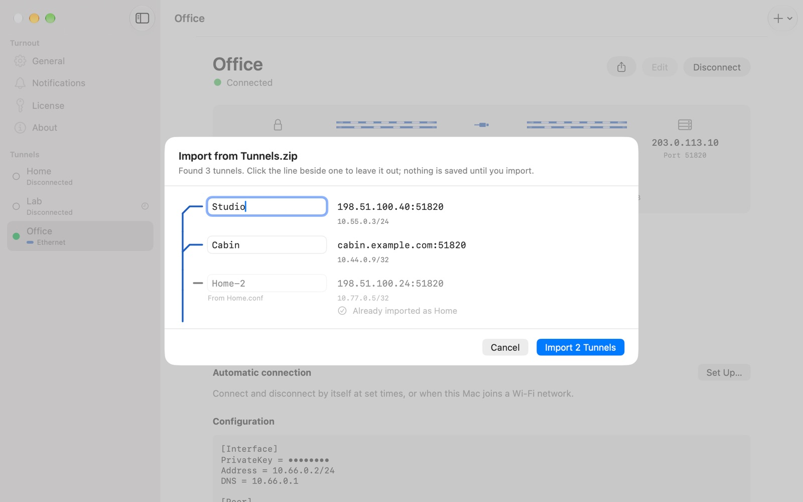

Turnout conecta tu Mac a servidores WireGuard como lo hace wg-quick, en una app nativa.
Tus hooks se ejecutan, tus rutas siguen siendo tuyas y tú eliges por qué interfaz de red sale el túnel.
Próximamente
Se está preparando la primera versión pública. Hasta entonces no hay nada que descargar. Sigue el repositorio en GitHub o su página de Releases para enterarte de la primera.
macOS 15 o posterior · Apple silicon e Intel · prueba de 7 días · US$19 en un solo pago, tres Mac

Tus configuraciones, tal como las ejecuta wg-quick
Turnout lee los archivos .conf que ya usas con wg-quick y los aplica como lo hace wg-quick en macOS, paso a paso y con las mismas herramientas del sistema.
PreUpPostUpPreDownPostDown- Los hooks se ejecutan, con
%isustituido por la interfazutundel túnel y%Ipor su nombre. Un administrador aprueba los hooks de un archivo antes de que puedan ejecutarse; cómo funciona. AllowedIPs- Se enrutan por el túnel, de la más específica a la menos. Un túnel completo usa
0.0.0.0/1y128.0.0.0/1, y las dos mitades de IPv6, en lugar de reemplazar tu ruta predeterminada, y la dirección del servidor se queda en tu puerta de enlace física para que nunca se enrute por su propio túnel. Tableautoymainenrutan como arriba;offdeja la tabla de rutas en tus manos.DNS- Los servidores y dominios de búsqueda se configuran en tus servicios de red mientras el túnel está activo, y tu configuración vuelve cuando se desconecta.
MTU- La que indiques, o calculada como lo hace wg-quick: la MTU de la interfaz de salida menos 80.
Elige la interfaz de red
Dos líneas que el formato de wg-quick no tiene. Empiezan por #@, que wg-quick lee como comentario, así que el mismo archivo sigue funcionando con wg-quick up.
[Interface]
PrivateKey = …
Address = 10.8.0.2/32
DNS = 10.8.0.1
#@ BindInterface = en0
#@ Route = 192.168.0.0/16 dev en0
[Peer]
PublicKey = …
AllowedIPs = 0.0.0.0/0, ::/0
Endpoint = vpn.example.com:51820#@ BindInterface = en0- El tráfico cifrado siempre sale por
en0, aunque otra interfaz tenga la ruta predeterminada. La ruta al servidor también pasa poren0. #@ Route = 192.168.0.0/16 dev en0- Estas redes evitan el túnel y salen por la puerta de enlace de
en0. Añade tantas como necesites, separadas por comas. AllowedIPs- Todo lo demás va por el túnel.
También puedes cambiar la interfaz de salida de un túnel conectado desde su ruta en la ventana principal. Turnout desconecta, guarda el cambio y vuelve a conectar.
Sigue a la red
Cuando cambian las puertas de enlace, las interfaces o los enlaces, o el Mac sale del reposo, Turnout vuelve a apuntar las rutas del túnel que pasan por tu red física a las puertas de enlace actuales, recalcula la MTU automática y vuelve a aplicar el DNS.
Si la interfaz a la que está vinculado un túnel desaparece y vuelve, el túnel se vincula a ella de nuevo y repite la negociación. Si desaparece del todo, la ruta al servidor se convierte en un agujero negro, para que la negociación no se cuele en el propio túnel, y las rutas que evitan el túnel esperan a que la interfaz vuelva.
Se conecta solo
Dale a un túnel un horario, una lista de redes Wi-Fi, o ambos.
Cuando empieza una franja del horario, Turnout conecta el túnel, y cuando termina, lo desconecta. Cuando el Mac se une a una de las redes de la lista, el túnel se conecta; cuando la deja, se desconecta. Entre medias, lo que hagas a mano se mantiene, y cambiar una regla nunca conecta ni desconecta nada por sí solo.
#@ Schedule = Mon-Fri 09:00-18:00
#@ OnWiFi = OfficeLas reglas son líneas del archivo de configuración y se configuran desde la página del túnel. Turnout las aplica mientras está abierto, por eso ofrece Abrir al iniciar sesión. Una regla de Wi-Fi necesita acceso a la ubicación, porque macOS considera el nombre de una red Wi-Fi como información de ubicación; Turnout lo pide cuando configuras la regla, nunca al abrirse.

Un editor que respeta tu archivo
Edita un túnel como formulario o como texto, y cambia entre los dos cuando quieras.
Los cambios reescriben solo las líneas que tocan, así que tus comentarios y el orden se quedan donde los pusiste. Los problemas se listan con su número de línea, y Guardar espera a que no quede ninguno. Un túnel nuevo viene con un par de claves recién generado.

Arrastra archivos .conf o un .zip a la ventana, elige Archivo › Importar desde archivo…, o pega una configuración copiada con Archivo › Nuevo túnel desde el portapapeles…. El zip que exporta la app oficial de WireGuard se abre como un lote: revisa cada túnel, deja fuera los que no quieras e importa el resto de una vez.

No deja nada atrás
Cada cambio que Turnout hace en las rutas y el DNS se anota antes de hacerlo.
Si el Mac se bloquea o se queda sin corriente con un túnel conectado, el servicio en segundo plano deshace lo que quedó en su siguiente arranque, y no conecta ningún túnel hasta terminar. Turnout › Reparar ajustes de red… hace lo mismo cuando quieras.
Desinstalar sigue un único camino, empieces desde la app, desde el instalador o desde un script de shell que puedes leer antes. Desconecta todos los túneles, restaura las rutas y el DNS, quita el servicio en segundo plano de Ítems de inicio y borra la app, sus registros y sus preferencias. Los túneles guardados se quedan, salvo que elijas borrarlos también. Qué quita cada opción
Lo que no es
- Aún no tiene kill switch. Turnout no bloquea el tráfico fuera del túnel. Mientras un túnel está desconectado, tu Mac usa su red normal.
- No es un proveedor de VPN. Usa tu propio servidor, o una configuración de tu proveedor o de tu administrador de red.
- No usa NetworkExtension. Los túneles se ejecutan en el propio servicio en segundo plano de Turnout, y eso es lo que permite que los hooks se ejecuten y que las rutas sigan siendo tuyas. No aparecen en Ajustes del Sistema › VPN.
Qué hace en tu Mac
Turnout instala un servicio en segundo plano que se ejecuta como root. Cambia direcciones, rutas y DNS con las mismas herramientas que usa wg-quick, guarda las configuraciones en una carpeta que solo root puede leer y ejecuta los hooks de una configuración solo después de que un administrador los apruebe. Puedes comprobar cada punto tú mismo.
netstat -rn # las rutas que añadió
networksetup -getdnsservers Wi-Fi # los servidores DNS que configuró
cat /Applications/Turnout.app/Contents/Resources/uninstall.shDescargar e instalar
Próximamente
Se está preparando la primera versión pública. Hasta entonces no hay nada que descargar. Sigue el repositorio en GitHub o su página de Releases para enterarte de la primera.
- Descarga el instalador, el archivo
.pkg, de la última versión en GitHub. - Ábrelo y sigue los pasos. Turnout se instala en tu carpeta Aplicaciones y se abre cuando el instalador termina.
- En la ventana de Turnout, instala el servicio en segundo plano y permítelo cuando macOS lo pida, en Ajustes del Sistema › General › Ítems de inicio y extensiones.
El instalador está firmado con un Developer ID pero Apple aún no lo ha notarizado, así que macOS puede negarse a abrirlo. Si pasa, ve a Ajustes del Sistema › Privacidad y seguridad, elige Abrir igualmente y vuelve a abrir el instalador.
macOS 15 o posterior · Apple silicon e Intel · prueba de 7 días · US$19 en un solo pago, tres Mac
Una licencia, tres Mac
US$19, en un solo pago, para tres Mac, con todas las actualizaciones de Turnout 1. Pruébalo primero: siete días gratis, y siete más si los pides. Sin cuenta, sin tarjeta y sin comprobación de licencia durante la prueba.
Tres Mac: los tuyos, los de tu hogar o los de una misma organización. Polar se encarga del pago y de los impuestos, y te envía el recibo. En cuanto pagas, la página de Polar muestra tu clave de licencia, lista para copiarla en Turnout, y tu página de compras de Polar la guarda. ¿No es para ti? Reembolso en 14 días, sin preguntas.